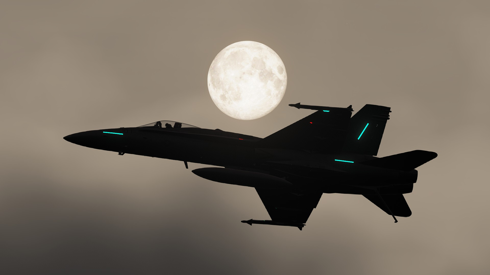
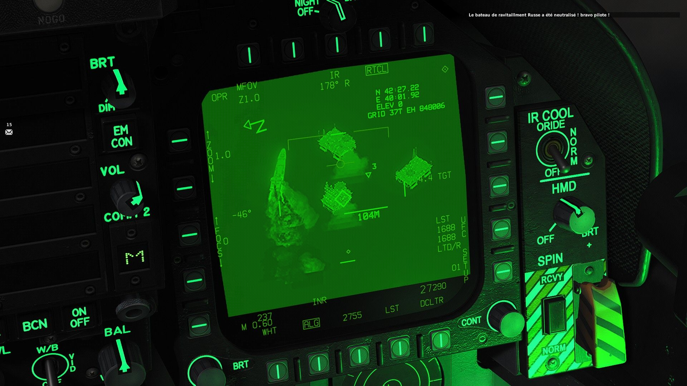
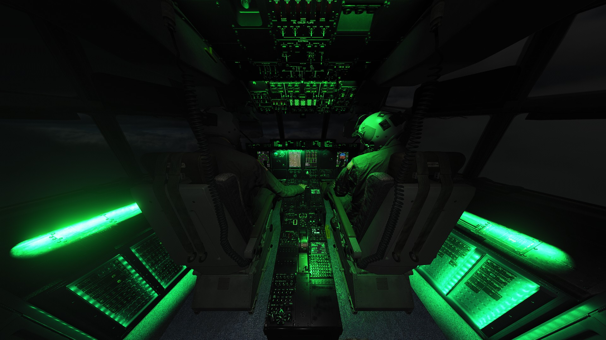

Blue SkyOps
L'unité d'opérations de Blue Sky France : des missions de nuit briefées, volées et débriefées en équipe sur DCS.
Ouvrir le dossierL'unité
Blue Sky Ops, c'est la partie sérieuse de Blue Sky France : une soirée, un briefing, un package d'avions et des objectifs à tenir. On y vient pour voler ensemble, pas pour le score.
Qui vole. Les membres du Discord qui veulent aller plus loin que le vol libre. Débutants bienvenus tant qu'ils écoutent le briefing et respectent la radio : on forme sur place, en patrouille.
Ce qu'on fait. Des opérations en plusieurs phases sur le serveur Blue Sky : suppression des défenses, frappes, appui au sol et interceptions de nuit, chacune avec son débriefing.
Où et quand. Sur nos serveurs DCS, en soirée, annoncé sur le Discord une semaine à l'avance avec un sondage pour réserver sa place. La radio passe par SRS, obligatoire pendant l'opération.
Nous joindre. Sur le Discord Blue Sky France, en demandant le rôle Blue Sky Ops. Les vidéos des soirées sortent ensuite sur TikTok et sur YouTube.
La livrée Blue Sky Ops
Deux versions pour le Hornet, faites pour l'unité : High Visibility, en blanc et rouge, et Low Visibility, tout en gris. Elles arrivent bientôt en téléchargement direct ici, avec leur notice d'installation.
Voir la présentation sur TikTokCe qu'on fait


Prêt pour le briefing ?
Les opérations sont ouvertes à tous les membres. Présente-toi sur le Discord et demande le rôle Blue Sky Ops.
Liaison avec le planning…
